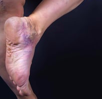
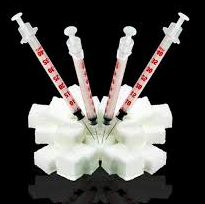
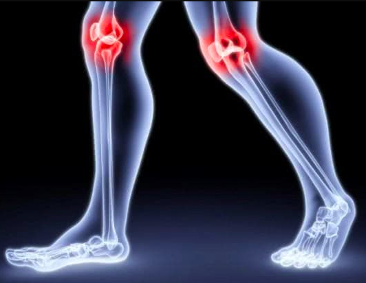

Search
Search Sign in
Sign inHypertension, varicose veins, diabetes, osteochondrosis and other "chronic" diseases - a legend formed by doctors that you have to pay for. How to clean the vessels so that these "incurable" diseases are gone for good.


Stroke and heart attack. These words frighten many, because it is the cause of every 6th death in Europe. They happen because of contaminated vessels. And for the same reason, the head can start hurting, eyesight becomes worse, sleep worsens and knees hurt. Yes, it is because of the cholesterol in the blood vessels. Age? Nothing can be done about it? But this is not true.
- What other diseases occur because the blood does not flow in sufficient quantities to the organs?
- What are the signs that your vessels are "tired"?
- Is it difficult to clean the vessels at home?
To understand the question and find definitive answers, we turned to a well-known Dr. Bonnie Henry. He kindly agreed to give the interview, which we bring to your attention.

Why do 9 out of 10 patients get sick because of blood vessels?
Dr. Henry, you tell your patients that blood vessels are 90% of a person’s body health. Why is that so?
It is often said that the largest human organ is the skin. That's not so. The vascular system is the largest one in our body. It is natural that diseases are most often associated with it.
5 years
are necessary in order to drive a distance equal to the length of vessels of 1 person in a normal driving schedule in a car.
There are about 150 billion capillaries in your body. If you create a model of capillaries from matches, it will weigh as much as 8 boings. And if you calculate the length of the vessels in the body, you get 65 000 miles.
Here is a comparison example. On average, the car drives 65 000 miles in 4-5 years. If you lay out a "thread” out of vessels and drive from its beginning at the start of 2020, then you will see its end in 2025.
Impressive scale?
Such a huge system cannot be simple. And it has a lot of options for different types of diseases it can catch.
Here are only 6 of the most dangerous and frequent problems, the cause of which are contaminated vessels
Let's see their ranking in order of increasing disease risk
- Varicose veins – the result of clogged vessels on the legs. Horrible pain, cramps, non-healing scrapes. Legs get tired after 20 minutes of walking. Fungus on the fingers and cracks in the feet, by the way, also arise due to insufficient blood supply.
- It hurts to go to the toilet and just sit – because the vessels of the rectum has weakened and brought you into having hemorrhoids.
- Aching joints – the outcome of the cartilage drying out and trace elements do not get into the joints. Pain in the knees, fingers, and hip joints begin due to poor blood supply.
- Liver issues – the result of the fact that blood brings few nutrients and the degenerative process begins – hepatosis. Frequent bitter taste in the mouth and belching – very characteristic symptoms.
- Vision worsens and dizziness – when the vessels in the head weaken, not only cataracts develop, but also the brain becomes vulnerable. Memory is getting worse every day, and intelligence also worsens.
- And at the top of the list – hypertension. The same disease that leads to strokes and heart attacks.
Vessels are the transport system for all nutrients in a person's body. Because of bad blood vessels, the whole body suffers. Every organ without exceptions.
Those who want to lose weight, now also will be interested. To moderate your appetite, you need to clear your blood vessels of cholesterol. It deposits in the vessels that block the path to the nutrients for the internal organs, and the brain perceives this hunger as a signal "give food!”.
But you actually ate more than you needed to. Hence the fat and folds. Clear the vessels – the extra pounds will go along with the desire to overeat.
Once again I will repeat: blood vessels are 90% of your health. Clean them, tone them up, and then almost all chronic and “incurable” diseases will disappear.
What is unnecessary in our vessels?
There are sometimes so many deposits on the walls that it is no longer possible to distinguish where the tissue of the vessel itself is. Does cholesterol alone clog the circulatory system?
8% of your weight
a lot of deposits at the age of 50 are accumulated in your blood vessels: 14-20 lb.
If the normal lumen of the vessels was the size of the wrist, then with age its size would decrease to the diameter of a finger.
Cholesterol
- The main part that clogs the blood vessels - cholesterol. It is a fat-like substance that enters the vessels in two different ways. About a quarter of the cholesterol we receive from food we eat, and the remaining three quarters are produced by the body itself.
- Vascular lumen narrows to 4-5 times in 50 years. Cholesterol plaques lead to headaches, joint problems, high blood pressure, and constant health issues. But blood thrombus and thrombus masses pose a real threat to life.
Thrombus
- Thrombus - a soft blood clot. A thrombus mass is the accumulation of blood clots in one place or even along the length of the entire vein. These masses are dry and dense. They accumulate around one kilogram. The danger is not in the number, but in the fact that they are unstable. They can come off at any time and lead to terrible consequences.
- If a blood clot blocks a vessel in your brain, a stroke occurs, if it blocks the heart artery, it is a heart attack.
- VAny other organ can also be left without blood supply, and then lungs can collapse, kidney failure, gangrene, and many other health disasters.
Calcium deposits
- Do you know how calcium gets into the blood vessels? These are the remains of tablets and food additives. For the entire life of a person around 1,1 lb are collected in your body. Most of all, the brain suffers from calcium.
- Calcium is a hard substance with sharp edges. It can easily pierce the vessel, if there is not enough space, that is, with any spasm from stress or even with a sharp change of body position. So many people have strokes.
4 diseases due to bad blood vessels and 7 of their harbingers
In the blood vessels, even with the right lifestyle at the age of 40, everyone accumulates "garbage". If you haven’t done it yet, then even if you feel good, you need to carry out “maintenance” to your body.
8% of your weight
the boundary, after which it is necessary to clean the vessels
Most of us eat food that harms your body, we drink alcohol and smoke. It is common and it is difficult to live otherwise. But you can't explain to the vessels that we ate fast food to save time, not because we wanted junk food. Cholesterol, blood clots, and calcium are happy with our habits: vessels are clogged 5-8 times faster.
Hypertension - a direct prescription for cleaning blood vessels at any age
Pressure surges indicate that the vessels are already blocked by 2/3. If you take pills during hypertensive crises, then each time you add even more calcium deposits. If you do not get out of this vicious circle, you will lead yourself into the grave.
And if the vessels are cleaned - there will be changes in pressure, frequent headache, pain in the joints will disappear.
4 things to do to clean your vessels:
-
1. Hypertension
Unstable or constantly high blood pressure, which has to be shot down with medication. The main and most important indicator. Is there a diagnosis for hypertension? It means that the vessels are yelling "Clean us!"
2. Varicosity
Ugly bulging veins on the legs, heaviness and pain, swelling. Cholesterol dirt and blood clots "jam" the venous valves. Gradually vascular "stars" appear, which then turn into a vascular "grid". And the grid is already developing into a full-fledged varicose veins.
3. Diabetes
hen sugar accumulates in the blood, blood vessels are very quickly destroyed. The destruction of all internal organs begins.
4. Osteochondrosis
This is the lack of blood circulation in the cartilage. The cartilage hardens and begins to wear off, not having time to recover. Does not renovate and they shrink. Loses the ability to gently absorb. The salts do not wash out and start growing uncontrollably.
7 precursors of serious diseases:
1. Swollen feet, fingers or face
Dirty vessels do not have time to remove the liquid. By evening, the feet swell so that we see the prints of socks on the ankles. Puffy face and bags under the eyes. Finger from which you can't remove rings. And the belly swells not because you get fat, but because the internal organs start swelling.
2. Dizziness
The problem is in the vestibular apparatus. This is the organ that is responsible for our coordination skills, so that we can feel the movement of the body and its position in space. The vestibular apparatus is located in the inner ear, so if it does not work well, then the hearing often suffers too.
3. Noise or ringing in the ears
That is how you can hear your blood moving through the vessels. This can be a constant hum, a thin ringing, pulsating or monotonous noise. These sounds make it difficult to concentrate. And they warn us: "Clean the vessels!"
4. Harder to sleep
The brain must produce the sleep hormone - melatonin. It is also called the hormone of youth. If the vessels do not work properly, you will feel sluggish and sleepy, and after a while you may experience serious problems: early menopause in women, obesity, and even cancer.
5. You get tired faster than before
This means that the body is trying to save energy so there is enough for inner organs to work. They don't get enough nutrition’s. You can never dream of physical or mental activity in this state.
6. Seeing ''stars'', blurry vision
Ripples, fog, strange "worms" in front of the eyes - these anomalies indicate vascular insufficiency of the eyes.
7. Aching joints
In the morning, you may feel stiff, as if your body has become rusty. Joints may twist in the cold or weather changes. Crunching sounds while moving and pain in the knees. This all suggests that there is not enough natural lubrication in the joints - synovial fluid. And without healthy blood circulation, it will not appear.
You can understand that any of these symptoms can get worse at any time. And then instead of elementary cleaning of vessels, you will have to pay a lot of money for operations.
Most often, several of these symptoms are present simultaneously. A big mistake is to treat each disease separately. Blood pressure pills, ointment varicose veins, candles against hemorrhoids, gels for joints. And of course, packs of painkillers...
Pharmacists will thank you for buying cars of unnecessary drugs. But in fact, you only need to overcome vascular obstruction.
How to clean the vessels?
Maria Ley, a 52-year-old accountant from California, wrote to me. She has a lot of cramps in her legs. It is difficult to walk in the evenings. Her blood pressure is also going high and low. And this is all at the background of excess weight.
How can we help Maria? I wrote her this answer:
“Maria, stop listening to incompetent doctors who say that at your age this is normal. At best, they will advise you to lose weight, but such advice can be given by neighbors. A normal doctor should first prescribe you Cardiofort. This is a natural drug that will clean your blood vessels and remove the causes of all your diseases. In a few months you will be a healthy person and will feel better than many at the age of 40.”
Doctors often try to get you hooked on a drug that you will pay for many years.
Remedies that are suitable as an emergency, you cannot drink every day. They mask the symptoms of the disease while the condition of the body deteriorates. You're taking a big risk: with such blurred symptoms, even a good specialist will not be able to determine what your problem is.
For the safe cleaning of blood vessels, I can name only one remedy with an impeccable reputation – Cardiofort. It can give you additional 11-17 years to your life. And this life will be full in all senses: you will feel cheerful until old age, your brain and memory will work perfectly, sudden pain is unlikely to bother you ever again.
Cardiofort has no side effects, unlike 99% of other products. And the effect of these capsules can be compared only to a surgery.
Cardiofort - a mixture of plant extracts that will not be deposited in your vessels with another calcium clot, but rather will sweep away all the garbage from the veins, arteries and the smallest capillaries. They remove cholesterol, blood clots, and calcium deposits – anything that interferes with the free flow of blood through your body.
No remedy can clear the vessels that have been clogged for decades faster than this Cardiofort. Enough for 1-2 months.
In the first month this Cardiofort already has cleansed your vessels by approximately 70%. It removes 9 lb of cholesterol plaques, about 2,2 lb of thrombus mass and cleanses 1 lb of calcium lime.
Along with it, the headaches disappear, the noise in your ears dissipates. The brain, getting full nutrition through clean vessels, works at the speed of a supercomputer. Thoughts become clear and understandable.
You become capable of doing what you once thought were superpowers.
Hearing becomes more acute. You can better distinguish smells. You can distinguish the subtle differences in taste that you have not noticed before. Appetite returns to normal, because the excess weight goes away. Allergies pass, and fresh air, filling the lungs, spreads through the body with pleasant waves, causing a feeling of light euphoria.
Varicose veins, osteochondrosis, hemorrhoids, problems with the liver, brain – all these diseases are a thing of the past.
Your body feels as if you are a car in which you have replaced old gear with new: the shaking and rattling stops, the car drives smoothly and will serve you for many years. The same way your body adjusts to new activities. It can do things you never hoped you could.
Impressive. And surprisingly, the name of this Cardiofort is still popular.
Maria Ley must have tried hundreds of different supplements and pills, put a cross on herself and vowed not to throw away money on dubious miracle funds anymore.
What people do not know about this Cardiofort, is not just surprising. It's depressing. Supplements such as Cardiofort are considered as the preferred treatment in Japan and Israel, but unfortunately, we are choosing more aggressive methods with a lot of side effects here. This is due to poor awareness of both patients and doctors.
Our doubts are traitors, making us lose a lot that we could have achieved if not for the fear of trying.
Let me tell you a cautionary tale about distrust.
In 1847, doctor Semmelweis worked in one of the maternity hospitals in Vienna and noticed that in his hospital women died 2.5 times more often than those who gave birth at home. The reason is one – fever.
Students at this hospital often delivered babies after other procedures, such as autopsies. They wiped their hands with a simple towel between the patients. The doctor suspected there might be a connection. Semmelweis ordered all hospital staff to wash their hands and tools before delivering a baby. What happened next? The death rate decreased 16 times!
It would seem that everything was very obvious – this practice should have been adopted by all other hospitals. But Semmelweis and his brilliant discovery was simply ignored! The medical community did not support him, despite the indisputable facts. The talented doctor ended his life in a mental hospital.
Washing hands became a common practice only after 100 years.
Hygiene could have saved hundreds of thousands of lives over those years. The same way this Cardiofort can eradicate vascular diseases now.
In USA, Cardiofort is officially prescribed only in one hospital in Washington. In the same one, where the "cream of our society" - ministers, deputies, celebrities and other elite are treated. They are treated there according to Israeli protocols, so patients get a result, not an endless process.
The rest of our citizens are treated with chemicals produced by factories belonging to this very elite.
I also believe that doubt is our worst enemy, so I'm not afraid to try new things.
Let's imagine I bought a Cardiofort, open the package, and take out a blister with capsules. It is already clear from the appearance of the capsules that chemistry is not involved in this.
I take the capsule, and what happens next?
Cardiofort - a carefully selected healing extracts that cleanse and restore the tone of each of your veins, arteries and capillaries in 5 steps
- Vessels are cleansed Berberine Extract cleans cholesterol stagnation. Berberine Extract molecules knock down plaques from the walls of blood vessels, like tiles from walls during repairs. But cholesterol still remains in the blood vessels, it can not move on its own. That is why the second stage is needed.
- Energy is generated Juniper Berry extract molecules continue to work. Juniper Berry - a plant of the rose family. Its molecules capture the "broken" cholesterol molecules and together with them turn into useful lipoproteins. These newly formed proteins remove cholesterol from the blood vessels. At this point, fat is burned and energy is released – you feel a surge of strength, health improves.
- Relieves spasms White Mulberry Leaf has a calming effect on the walls of blood vessels. Those that were compressed without normal blood flow return safely and smoothly to normal. Headaches disappear, the tinnitus subsides, the lungs and bronchial tubes work perfectly.
- Relieves stress in your heart Bitter Melon finds blood clots and dissolves them. The remaining calcium is swept away from the walls of blood vessels and no longer threatens to injure veins, arteries and capillaries. The risk of a heart attack drops to zero.
- Strengthens the walls of blood vessels Cinnamon Bark Powder improves the tone of the walls of blood vessels. In case of micro damages where vascular ruptures are possible, willow molecules “stick” like a plaster. The brain is well protected from strokes. The cells receive nutrition and oxygen, and head feels pleasantly lighter.
Sugar level return to normal. The blood flow will no longer meet any obstacles. The organs are finally getting normal nutrition.
The joints do not ache, the varicose veins stop bulging. You are no longer afraid of the hemorrhoidal problems, the swelling is gone, and the liver and other organs are completely safe.
Domino principle
The Cardiofort effect is similar to the Domino effect, where a single bone triggers a chain reaction of change. If you overcome one major problem, the rest will disappear too. Clean the vessels – and that is the first step.
What happens next? Let's think about it.
Waking up without issues
- You wake up in the morning and easily get out of the bed - no need to force yourself to get up, stretch and rub stiff legs, creaking back and neck.
In the morning, the body is filled with energy and strength, because the vessels are completely cleansed and during the night all organs received good nutrition and rest. No part of the body was starving from lack of blood supply, gaining strength for the new day at night.
Breakfast is whatever you want it to be
- At breakfast, you eat a sandwich with a thick layer of butter and ruddy, crunchy bacon - and the liver and stomach easily accepts it. No more belching, stabbing pain in the stomach. Cardiofort has cleared the vessels that feed the stomach, now it will digest even a nail.
The strength of a superhero
- After leaving home you no longer need to worry about your legs - you don’t see walking as a job, you can walk at least all day, and your legs do not get tired and do not swell. Sandals, shoes, and socks don't bite into swollen feet like twine into a sausage stick.
Calmness and equanimity
- You are absolutely calm and relaxed. There is no more constant pain that devours your mind, not allowing you to focus on anything else. When nothing hurts familiar things, sounds, smells show for you with new, long-forgotten colors.
Energy and readiness to act
- Even after a hard day's work, you come home with a clear, light head. The brain works like a Swiss watch, you don't feel tired at all.
Great sleep
- And so, when you get into bed, you quickly and pleasantly fall asleep. You won't be tossing and turning around in your bed. Now everything is simple - you decide to fall asleep, and the body obediently performs your command. Your sleep is strong and pleasant.
Deficit and regional discount program
Cardiofort is not available in most pharmacies. Why?
- Unfortunately, this is true. We refused to pay kickbacks to greedy pharmaceutical networks. They wanted to put huge margins in order to personally receive 250-300$ for each package. With such inflated prices, the course could cost the buyer 600-700$.
- The management of pharmacies in the negotiations explained to us that if a person buys a product course, he will be cured, and pharmacies will lose a regular customer. The other medicines he had dutifully bought every month would no longer be needed.
- This leads to losses for pharmacies, so they demanded to set the highest possible price for the Cardiofort.
- As a result, the manufacturer Cardiofort broke off contracts with all pharmacies and switched to sales only via the Internet. So you can get around a lot of problems. The client talks on the phone with the consultant, together they determine the duration of the course, and then the client just receives the parcel. Therefore, Cardiofort is now much more affordable than when it was sold in pharmacies.
Discount program "Clean vessels"

Our institute together with the Cardiofort manufacturer launched a regional discount program.
Residents of the regions participating in this program can get a FREE pack of Cardiofort.
What do I need to do to get into the program?
To order a Cardiofort under the regional discount program, you need to meet 3 conditions:
Live in the discount region
This can be used only by people who live in the region where this discount program existsOnly for personal use
This is necessary to fight with resellers who are trying to massively buy the Cardiofort and resell it with their mark-upFill out an application at the official website
Purchasing via official website is a guarantee of producer prices and protection against resellers
How long will the regional discount program last?
- Until the Cardiofort batch allocated to the region has been sold out. Each region has allocated 30,000 packages of the supplement. And it is completely sold out in 3-4 weeks. And this is despite the fact that there is no advertising on TV and radio. People give each other information, advice friends and relatives. Even for us, it was a surprise that information about this Cardiofort would spread so quickly.
- Therefore, if you are lucky and there is a discount program in your region, I recommend that you apply to receive this Cardiofort as soon as possible. There will be no repeat program this year for sure.
In Canada, the special offer is live up to inclusive! To buy this product at a 50% discount, you have just to fill in a form on the official site of "Cardiofort" and wait for a call to confirm your order.
EDITOR'S NOTE: Official suppliers of Cardiofort™ have accepted to provide 50% discount exclusively to our readers for a limited period.
(BOTTLES ARE SOLD OUT EVERYDAY - ORDER NOW BEFORE THEY RUN OUT)
IMPORTANT: In clinical trials, it has been proven that you MUST use this product DAILY to achieve similar results.
 Update: There are only 2 free samples left. End of the free promotion example:
Update: There are only 2 free samples left. End of the free promotion example:
Step 1: 75% discount of Cardiofort.
ORDER ON THE OFFICIAL WEBSITETake advantage of our exclusive link and pay only the shipping costs!
This special offer ends:


Devan, as far as I know, in your region the program was last month and has already ended. Perhaps next year we will launch a new one, but this is not as accurate.

What a pity! I don't even know what to do... Now I don't have that kind of money...

Devan, maybe you have relatives or friends in a discount active region? You could ask them to order it with a discount. Unless, if they decide to leave the capsules for themselves) there, according to the terms of the program, only one course can be ordered per person.

I bought a 2-month course for low cost at the pharmacy. Last year, when Cardiofort was still in the pharmacies. And honestly I do not regret it! Although it turned out to be expensive, but I do not regret the spent money. I have already saved almost the same amount on other medicine for this year alone. And how much easier it has become to live! So it cannot be measured by any money! At 52, I felt like an old man. But here in 2 months, I forgot about the pressure, I feel like a young healthy MAN(if you know what I mean)! So even if there is no discount program in your region, then order it without a discount, for any price - you will not regret it! I feel that this Cardiofort will soon be banned in US, it spoils the life of many companies and deprives them of profit.
Cardiofort – THE BEST SUPPLEMENT OF THEM ALL. At first I was using adelfan, then erinite. I know, outdated supplement. But I don't like going to doctors, and it didn't bother me much. Took occasionally, when the pressure rose or there were issues with my heart. But then suddenly they stopped working. Then I went to the doctor, and he advised me to try a new Cardiofort (the young doctor probably still believes that medicine should be for people, not for pumping money!). Capsules helped me from day one - the pressure immediately decreased, but began to take the course, as advised by the doctor. After 3 weeks I forgot what hypertension even was. Varicose veins that tormented me for 10 years have disappeared! There was also a woman's problem, and now there is no trace of the said issue. I feel wonderful, as when I was young!

Thanks! I managed to order myself one for half the price. I’ll try it out soon.

And in Louisiana were there already discounts too?
In all United States, the discount program is planned for the current month. If nothing changes, 30,000 product packages will be sent with discounts.

30,000 packages per country? It's a drop in the ocean...
I'm amazed at the freeloaders!!! Everybody always owes you something! When I realized that I need this Cardiofort, I was not expecting for freebies! Borrowed and bought!
Do not judge so you won't be judged either! You don't know what that person's situation is! Maybe he is disabled, not working, where would he get the money?

My mother's fingers began to go numb, a friend of the doctor advised me for her to clean the vessels. I prescribed "statins", but I read that they can cause colon cancer and decided not to risk it. As a result, we accidentally learned about this Cardiofort. Bought this Cardiofort almost illegally. But we didn't have to wait for the results long. After a couple of days there was a noticeable improvement in the color of her face, hair, nails. The general condition of her body got better, and by the second week her fingers had almost stopped being numb. The numbness passed after 1, 5 month + the pressure returned to normal. My mother became very energetic, her memory improved and her joints stopped hurting even in bad weather. In general, this supplement is super, I recommend it to everyone!

I bought this Cardiofort, because I had issues with pressure, because almost every day in the evenings I had a headache, and nothing helped. Not even painkillers. Although I found out only later that my head aches were because of the pressure. But that's not the point. An employee recommended this Cardiofort to me and I managed to order it with the discount program. I was very happy. In 2 month time, I became a completely different person! I realized that before cleaning my blood vessels, I actually did not live at all. The headaches no longer bother me, varicose veins have disappeared and MOST IMPORTANTLY - I HAVE LOST 20KG! From 94kg to 74kg! That's what it means to normalize blood circulation! I definitely recommend this Cardiofort to everyone!

Thank you for your comments! I am an incredible disliker of trips to clinics, especially, if doctors prescribe either expensive medicine or "out of the ordinary" (I remember, I could not find these strange, "unusual" prescribed eye drops in any pharmacy in our city). And not always doctors can "see" the interior of the problem in our body. My hands have been feeling numb in the morning for almost a year now. Thanks to your review, I will try this Cardiofort. Even if it doesn't help with numbing, it is never harmful to clean your vessels! Just like using a natural product. Thanks!
Thanks for this article! I found it just in time. Just recently checked my cholesterol level and the doctor prescribed me a course of statins. Instead of trying statins, I will try this Cardiofort better, the natural composition inspires me and gives me more confidence.

I've heard of this method of purifying blood vessels, but I haven't tried it yet... I think now is the time to try it =)

I took a chance and even now I don't regret it. If there are problems with blood vessels - I recommend this product. There were no side effects, and I was satisfied with the result

I have high cholesterol and I was prescribed PITAVASTATIN (LIVAZO). I couldn’t even drink it for one week, all the lymph nodes were swollen, especially on the neck, I couldn’t turn my head. Plus my eyesight dropped. Literally in 4 days of using it, some kind of "haze" in my eyes appeared. The doctor said that statins can do this, it is in the possible side effects. He prescribed a replacement-CRESTOR (ROSUVASTATIN), but I was afraid it and didn't even use it. Now I'm thinking if I should try this Cardiofort, natural composition should not give the same side effects?
Cardiofort against cholesterol is the first remedy! There are no side effects. There is actually nothing to give side effects from - all natural. Unless there is somebody with a rare allergy against it.

The best remedy against cholesterol - DIET!

The diet will help protect against the formation of new deposits, but will not affect the old ones. Believe me, I've been through this story with diets more than once.

Total cholesterol for me was 6.8, which is very high for me. Constant dizziness, pressure surges, and poor health. And after 2 months of this, it went to 3.4 but importantly my well-being! Now I don't need to do the analysis. I realized the difference, what is not "fat" blood when my head felt much clearer))) People see me and say that even my speech has become better! Changes in everything.
Thank you for the information! I want to try this. This pressure issue is not giving me to live my life...
I subscribed to every word - Cardiofort is wonderful, one of the most economical and effective supplements! If you compare it with other tablets, it turns out to be 10 times cheaper, and the result is 10 times longer and there are no side effects.
Tell me, when will there be a discount program in Quebec? I really need this Cardiofort, but now I don't have the money for the full cost course...